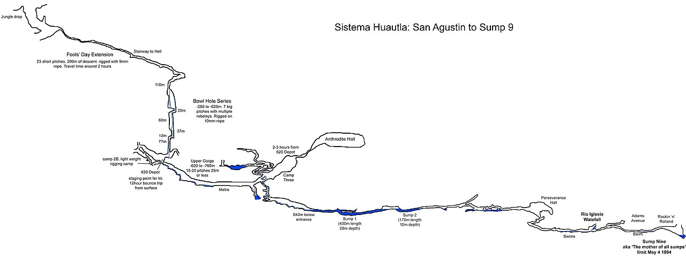

Before anyone can live on the Moon, NASA wants to find underground caves, hidden ice, and safe ground. Three new missions are going to scout the way.
Living on the Moon sounds like science fiction, but NASA is working on it for real. The big plan is to build humanity's first home away from Earth — an outpost called Moon Base. But before anybody can move in, scientists have to answer three very practical questions: Where would astronauts sleep? Where would they find water? And what on the Moon might hurt them? This month, NASA picked three brand-new missions to go find out.
The scouts are going first
NASA's teams chose three scientific investigations, packed with instruments, through a program called PRISM (Payloads and Research Investigations on the Surface of the Moon). They will ride to the lunar surface on commercial delivery spacecraft as part of the broader Moon Base Program, laying the groundwork for astronauts under NASA's Artemis missions.
None of them carries people. Think of them as very high-tech scouts, sent ahead to check whether the Moon can be a safe, long-term home.
The cave hunter: GIMLI
The most exciting mission has a fun name: GIMLI (Geophysical Instruments for Marius Lunar pit Investigation). It is heading for a place called the Marius Hills Pit — basically a big hole in the Moon's surface — to find out whether the hole leads down into a huge underground tunnel.

Those tunnels are called lava tubes. Here is how they form: long ago, molten rock called lava flowed across the Moon. The outer surface of the flow cooled and hardened into a crust, while hot lava kept moving underneath. When that flowing lava finally drained away, it left behind a hollow, cave-like tube running through the rock. Scientists think similar tubes may hide under parts of the Moon's old volcanic landscape.
Why would a cave be useful? Because the Moon's surface is a rough neighborhood. Without an atmosphere to shield it, the ground swings between searing heat and bitter cold, gets blasted by radiation from space, and is peppered by tiny space rocks called micrometeoroids. Down inside a thick-walled lava tube, it is far gentler: more stable temperatures and natural shielding from all three dangers. A ready-made cave could be a ready-made shelter.
To peek underground without digging, GIMLI will use seismic sensors (to feel vibrations, like a doctor's stethoscope for the ground), a gravimeter (which senses the tug of gravity and can reveal hollow spaces below), ground-penetrating radar, and cameras.
The ice finder: DISCO
Another mission, DISCO (Depth Imager with Spectral and Color Optics), is on the hunt for water ice. Deep in permanently shadowed spots — craters and hollows that never receive sunlight, nicknamed micro-cold traps — water ice could have survived for ages. DISCO will take some of the first direct measurements of ice tucked into those freezer-cold shadows, because finding water on the Moon would be a huge deal for future explorers.
The safety checker: LEMS-SP
The third, LEMS-SP, is all about watching out for astronauts. It will monitor the lunar environment to help scientists understand natural hazards, like the tiny moonquakes and radiation that anyone living there would need to prepare for.
Why it matters
The Moon only looks empty. Under its surface there may be caves, and locked in its shadows there may be ice — resources that could turn a harsh, lifeless world into a place people can actually stay. To build a Moon base, you first have to know what is down there to build it around.
So the next time you look up at the Moon, remember: it may not just be a bright disk in the sky. It might be hiding caves and frozen water, and there are already robots on the way to check.
Sources: NASA — NASA Adds New Science Investigations for Moon Base · ScienceDaily — NASA is searching for hidden caves to build its first Moon base